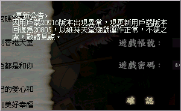

|
2002年9月27日
香港伺服器用戶端回復為20805

昨天香港伺服器用戶端更新為20916，並加入了自我檢查CRC保護，假如主執行程式被改動後便不能順利進入天堂遊戲，此舉可以防止玩家透過修改用戶端檔案以達到否些好處，例如目前非常流行的全白天及水底洞穴抽水等，不過並不能防止玩家透過修改記憶體以達到相同效果。但由於新版本出現異常，因此現在用戶端改回20805。
註：根據遊戲規則：（NC "Ganamia"應該打錯字吧．．．）
未經NC Ganamia公司同意，不得刊登、散佈任何有關天堂網路遊戲的修改工具、模擬器或相關程式。
如果未能遵守本指南，將可能使您的帳號在不先行通知的情況下被取消。
加上NC Gamania對本網特別"關心"，為免本網工作人員帳號被鎖，因此本網一向都不會提供全白天、水底抽水、火谷除霧、SPR改圖及NuMen輔助程式等程式。 |